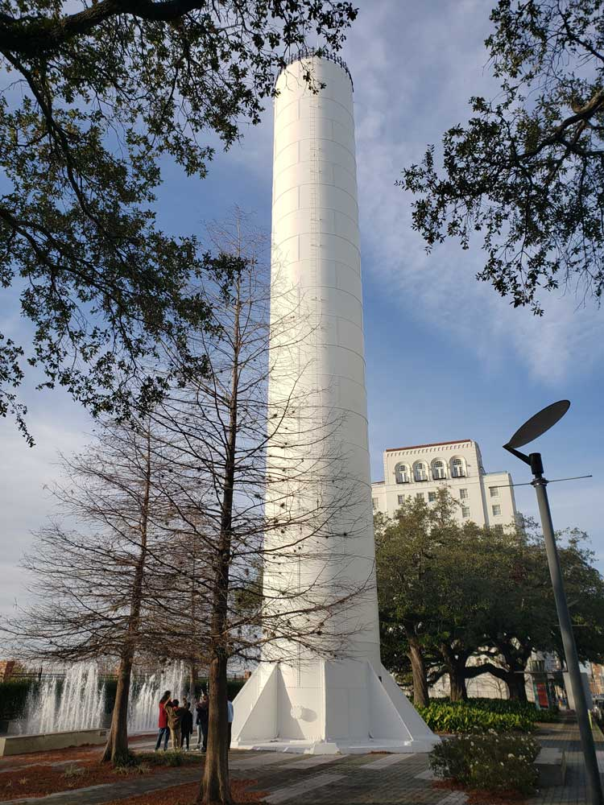
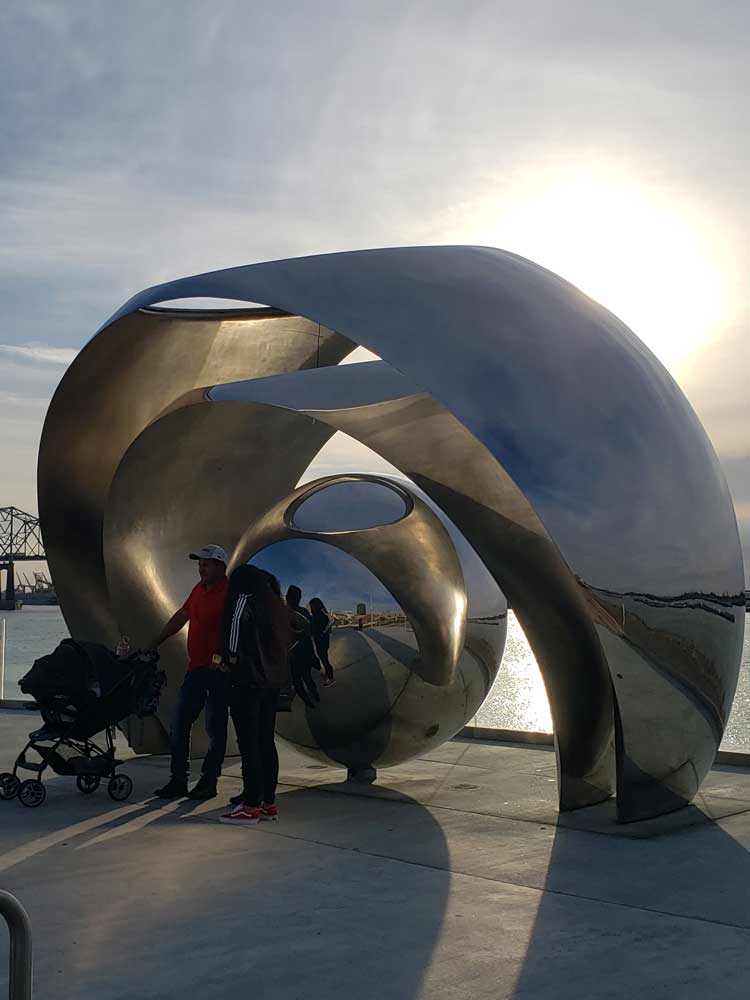

Cajun Country Travel Guide
Culturally rich region known for its distinctive French-Acadian heritage, traditional music, celebrated cuisine, and scenic bayous, prairies, and wetlands.
Places to See in Cajun Country

Acadiana Park Nature Station
Interactive environmental education center featuring forest trails, wildlife observation areas, and hands-on exhibits focused on native ecosystems.

Atchafalaya National Wildlife Refuge
Expansive preserve featuring bottomland hardwood forests, swamps, bayous, and oxbow lakes teeming with diverse wildlife and recreational opportunities.

Audubon Louisiana Nature Center
Urban oasis offering immersive trails, a planetarium, and educational exhibits within a restored hardwood forest ecosystem.

Brownell Memorial Park and Carillon Tower
Scenic sanctuary featuring a towering carillon with 61 bronze bells, native flora, and tranquil walking paths ideal for reflection and nature observation.

Cajun Country Swamp Tours
Authentic eco-swamp excursions through cypress-lined bayous led by Cajun naturalists aboard quiet crawfish skiffs.

Cypremort Point State Park
Coastal retreat offering a man-made beach, marsh boardwalk, and abundant wildlife within a scenic Gulf-accessible park.

E.D. White Historic Site
Historic plantation home and museum showcasing Louisiana’s legal, cultural, and agricultural heritage along scenic Bayou Lafourche.

Evangeline Oak Park
Riverside park centered around a legendary live oak tree, offering shaded views of Bayou Teche and a poignant link to Acadian heritage.

Houma
Bayou-centered city celebrated for Cajun culture, seafood traditions, swamp adventures, and access to Louisiana's coastal wetlands.

International Petroleum Museum and Exposition, Inc.
Historic offshore drilling rig museum offering guided tours aboard the legendary “Mr. Charlie,” showcasing the evolution of the oil industry.

Jungle Gardens
Expansive semitropical garden featuring ancient oaks, wildlife, and historic landmarks along a scenic bayou drive.

Lafayette
Vibrant cultural hub renowned for Cajun and Creole traditions, live music, distinctive cuisine, and access to the wetlands and prairies of south Louisiana.

Lake Fausse Pointe State Park
Expansive wetland preserve offering cabins, campsites, hiking trails, and canoe routes through the heart of the Atchafalaya Basin.

LARC's Acadian Village
Living history museum preserving 19th-century Acadian architecture and culture through restored homes, period furnishings, and seasonal events.

Laurel Valley Village Store
Restored general store and museum offering a glimpse into sugarcane plantation life with historic artifacts, local crafts, and seasonal festivals.

Longfellow-Evangeline State Historic Site
Historic plantation and interpretive site showcasing Creole and Acadian heritage along Bayou Teche through preserved architecture and cultural exhibits.

Mandalay National Wildlife Refuge
Freshwater marsh and cypress-tupelo swamp refuge offering wildlife viewing, boating, and a nature trail through a unique floating marsh ecosystem.

Palmetto Island State Park
Lush riverside park offering cabins, campsites, paddling trails, and a water playground amid native palmetto groves and cypress swamps.

Shadows-on-the-Teche
Antebellum estate and gardens offering guided tours that explore the intertwined histories of the Weeks family and the enslaved people who lived and labored there.

Southdown Plantation and Museum
Restored 19th-century sugar plantation manor showcasing regional history, Mardi Gras culture, and artifacts from Native American and Creole heritage.

St. Joseph Co-Cathedral
Historic Romanesque-style cathedral serving as a spiritual and architectural landmark in the heart of Bayou Lafourche.

Tabasco Factory Tour
Interactive self-guided experience exploring the history, production, and global legacy of TABASCO® Sauce through museum exhibits, greenhouses, and factory stops.

Wedell-Williams Aviation and Cypress Sawmill Museum
Dual-themed museum celebrating Louisiana’s aviation pioneers and the historic cypress lumber industry through immersive exhibits and rare artifacts.
Overview
The Cajun Country region, officially known as Acadiana, encompasses a large portion of south Louisiana where French-Acadian traditions have flourished for generations. The landscape ranges from rolling prairies and agricultural fields to cypress swamps, marshes, bayous, and Gulf Coast waterways. Communities throughout the region preserve a unique cultural identity expressed through Cajun French, lively dance halls, traditional crafts, and a culinary heritage famous for dishes such as gumbo, jambalaya, boudin, and crawfish étouffée. Visitors encounter a culture deeply connected to the land and water, where music and hospitality remain an integral part of everyday life.
Centered around cities and towns such as Lafayette, Breaux Bridge, St. Martinville, New Iberia, Abbeville, and Eunice, the region offers an immersive experience through festivals, historic sites, wildlife areas, local restaurants, and cultural attractions. Throughout the year, travelers can enjoy live Cajun and zydeco music performances, explore scenic wetlands, sample regional cuisine, and learn about the descendants of Acadian settlers whose traditions helped shape one of North America's most distinctive cultural landscapes. The combination of natural beauty, history, and living traditions makes the region one of Louisiana's most celebrated destinations.
This article uses material from the Wikipedia articles and official tourism pages for Cajun Country (Acadiana), which are released under the Creative Commons Attribution-Share-Alike License 3.0.

